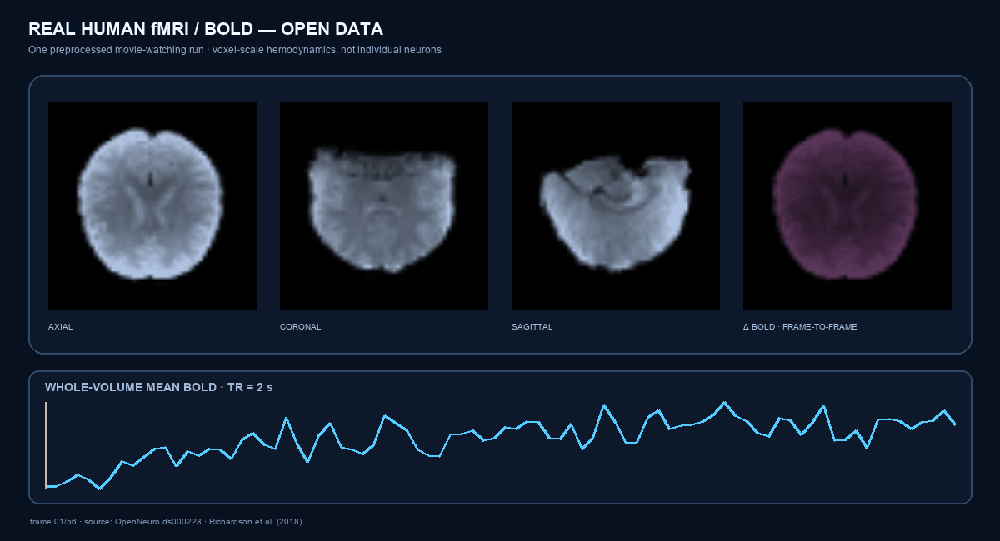
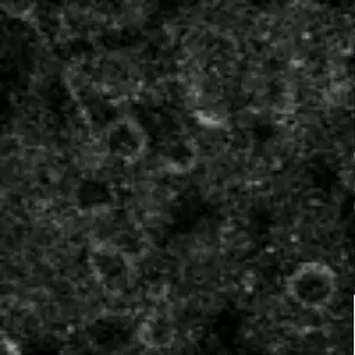

Feedback supplies a complementary receptive field.
Feedback-driven responses can occur outside the feedforward receptive field and carry information about spatial context and missing input.
Keller et al., Nature 2020 ↗BRAIN-INSPIRED SYSTEMS · PAIRED EMPIRICAL STUDY
A local complementary surround restores missing visual evidence; a fixed-size subbatch earns Swin’s final stage. We test the mapping as an architecture and executable hardware path, with biological correspondence bounded explicitly.
1 UC Berkeley · Independent research
INTERACTIVE METHOD FIGURE
These are saved public-MNIST pixels passed through the adaptive-reach Dual-RF operator used in the experiment. Switch the mask to see when a local surround is sufficient and when the field expands. No illustrative model activation is substituted.
The route display shows capacity, not measured neural activity. Experiment latency is reported separately below.
ABSTRACT
Visual feedback can create a receptive field outside a neuron’s feedforward center, providing contextual evidence where direct sensory drive is absent. Dual-RF translates that complement—not the biology itself—into a masked-image operator.
Dual Receptive-Field Routing (Dual-RF, ours) preserves observed pixels and fills missing locations only from center-excluded observed context. The supported local operator uses one (3! imes!3) surround; an adaptive-reach variant expands through (5,9,17,) and (31)-pixel fields when local support is absent. The completed sheet and mask enter an official pretrained Swin V2-Tiny. An early head serves every example; one fixed-capacity contiguous top-(k) subbatch executes the final Swin stage.
On paired CIFAR-10 subsets, adaptive Dual-RF changes 45%-row, 35%-block, and 45%-pixel accuracy by +12.3, +1.5, and +27.0 percentage points while cutting measured M4 MPS latency by 29.2%. Baseline and method have exactly the same 27.6M learned parameters, checkpoint, examples, masks, initialization, and optimizer schedule.
The direct control is the important part: one local (3! imes!3) surround recovers nearly all CIFAR-10 improvement and is 31.5% faster. Adaptive reach adds only +2.2 mean points on rows and its interval crosses zero. The supported claim is therefore local evidence-preserving completion plus executable fixed capacity—not a general advantage for field expansion, ImageNet state of the art, or an energy measurement.
MEASUREMENT → ABSTRACTION
The architecture is grounded in cellular and systems findings cited below. The fMRI animation is real open human imaging for provenance and scale; it did not supervise the model.


Feedback-driven responses can occur outside the feedforward receptive field and carry information about spatial context and missing input.
Keller et al., Nature 2020 ↗Retinotopically offset feedback can facilitate dendritic events while aligned feedback can be suppressive. Dual-RF borrows the separation of center and surround; it does not model dendritic voltage.
Fişek et al., Nature 2023 ↗The supported operator uses a local center-excluded \(3\!\times\!3\) field and clamps every observed value exactly. Broader adaptive reach is isolated as a separate, currently inconclusive extension.
OpenNeuro fMRI·Nilearn loader·Richardson et al. 2018·Giovannucci et al. 2019
FIGURE 1 · FULL ARCHITECTURE
Completion changes the evidence presented to Swin. Fixed capacity changes which examples execute late depth. The direct local-field control isolates whether adaptive spatial reach contributes beyond simple completion.
The center is excluded. The local operator uses \(\mathcal S=\{3\}\); the adaptive extension uses \(\mathcal S=\{3,5,9,17,31\}\).
The expensive path receives a fixed-size dense tensor; no per-example Python branch enters the measured path.
INTERACTIVE EVIDENCE
The default comparison is pretrained Swin V2-Tiny on natural-color CIFAR-10; toggle MNIST for an independent transfer study. Both use mixed 15–25% training missingness and held-out severe masks.
The local control has the same checkpoint, learned parameters, data, masks, initialization, optimizer, and 25% route. Removing broader fields changes clean, row, block, and pixel means by +0.7, −2.2, +0.7, and +0.03 points relative to adaptive Dual-RF; every adaptive-minus-local interval crosses zero.
CIFAR-10 and MNIST test the same pretrained Swin path; the smaller ConvNeXt-style replication shows where effects shrink.
Accuracy is held-out fraction correct. Error intervals are 95% t intervals over paired seeds and are wide at (n=3). Latency is end-to-end Apple M4 MPS time at the recorded batch shape; it is not FLOPs, joules, or a hardware-independent claim. Oracle routing uses labels and is diagnostic only.
CLAIM LEDGER
The exact CIFAR-10 control improves every tested mask topology with one center-excluded \(3\!\times\!3\) field; row and pixel direction repeats on MNIST.
The final stage executes on one contiguous 25% subbatch; savings are measured against dense masked Swin.
It has a +2.2 pp row mean over the local control, but is lower on clean and blocks, tied on pixels, and every paired interval crosses zero.
The backbone is strong and pretrained, but the datasets and missingness protocols remain small. ImageNet-scale and direct energy tests are still absent.
LIMITATIONS
Dual-RF assumes an explicit missingness mask; it does not detect arbitrary semantic corruption. The deterministic completion operator is related to normalized and partial convolution, while fixed top-\(k\) execution has clear ancestors in conditional-computation work. The direct control shows that adaptive spatial reach is not yet a distinct empirical contribution. The claim is the center/surround co-design, its exact integration, and the measured operating point—not that either ingredient appeared from nowhere.
The largest effects use a 6,000-example CIFAR-10 subset; MNIST supplies a second dataset and the smaller ConvNeXt supplies a second backbone, but neither substitutes for ImageNet-scale evaluation. A final-stage exit can be unusually safe on these transfer tasks, so the measured latency gain may shrink at scale. Three seeds provide replication but low statistical power. The real fMRI animation is provenance and communication—not training data, neural supervision, or evidence that a BOLD voxel implements Dual-RF.
CITATION
@misc{dils2026dualrf,
title={Dual Receptive-Field Routing: Robust Missing-Evidence Vision with Fixed-Capacity Depth},
author={Dils, Alex},
year={2026},
url={https://alex-dils.com/brain-inspired-ai/},
note={Paired empirical research artifact}
}